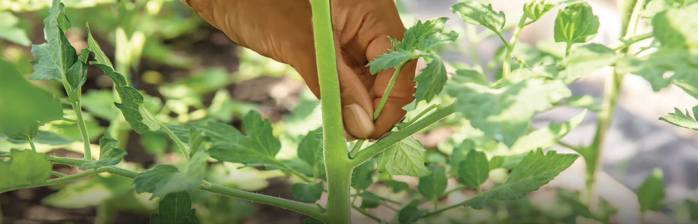
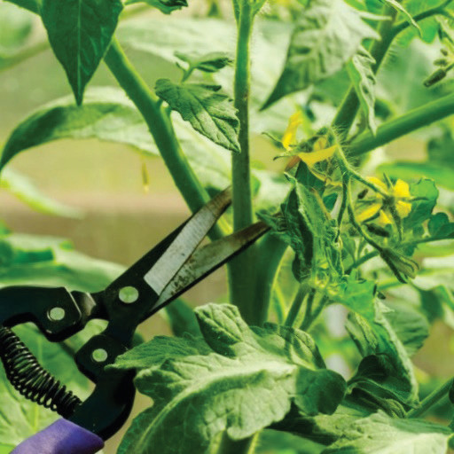
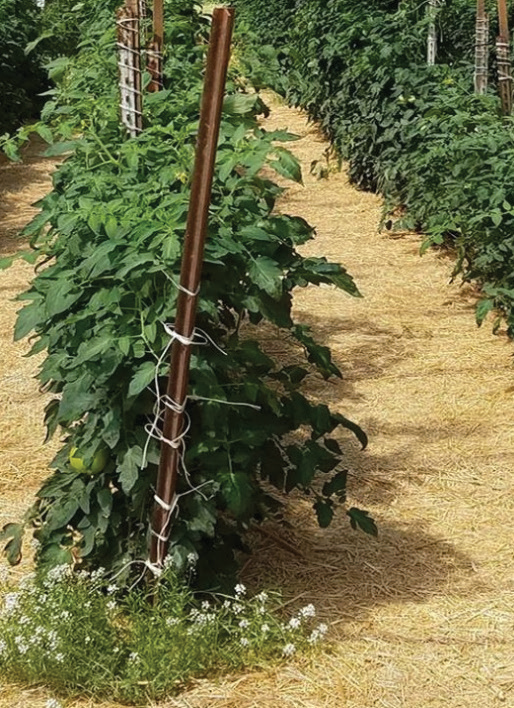
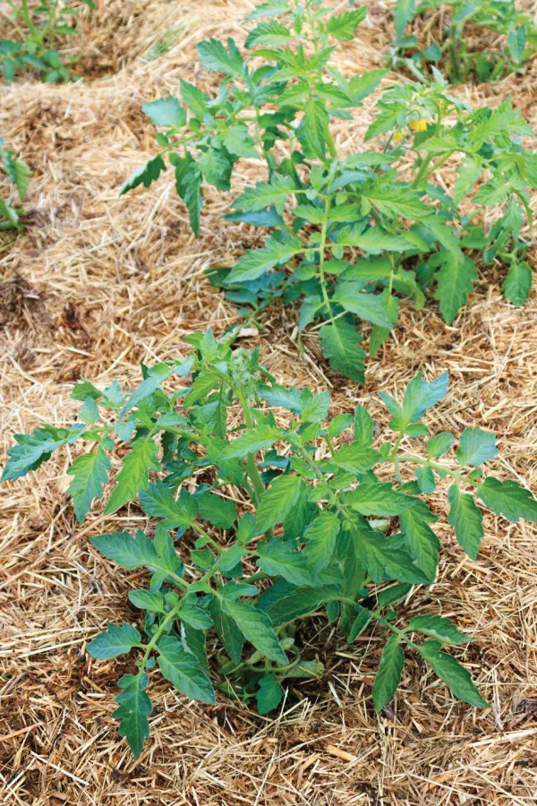
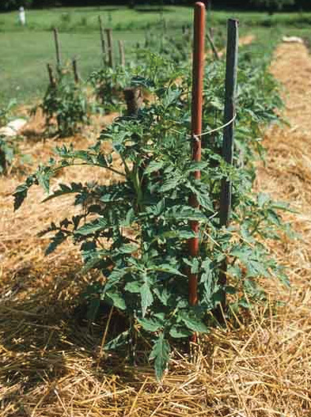

Mulching in tomatoes
Mulching is the practice of covering the soil with a layer of dry grass, straw or plant remains (refer to Figure 8.5). Where grass straw is used it is advisable to make sure that the materials are free from seeds to prevent weed invasion. Mulching helps to conserve soil moisture by preventing or reducing evaporation. It also helps to reduce soil erosion and control weeds, particularly the ones with broad leaves. Moreover, when mulch decomposes it adds organic matter to the soil.



Management of weeds in tomatoes
Weeds should be controlled right away from the early stages of crop establishment because, at this stage, weeds can badly affect plant growth and it can result into low crop yields. Measures for weed control should begin with correct land preparation together with cultural practices to control weeds such as manual hoeing, mulching